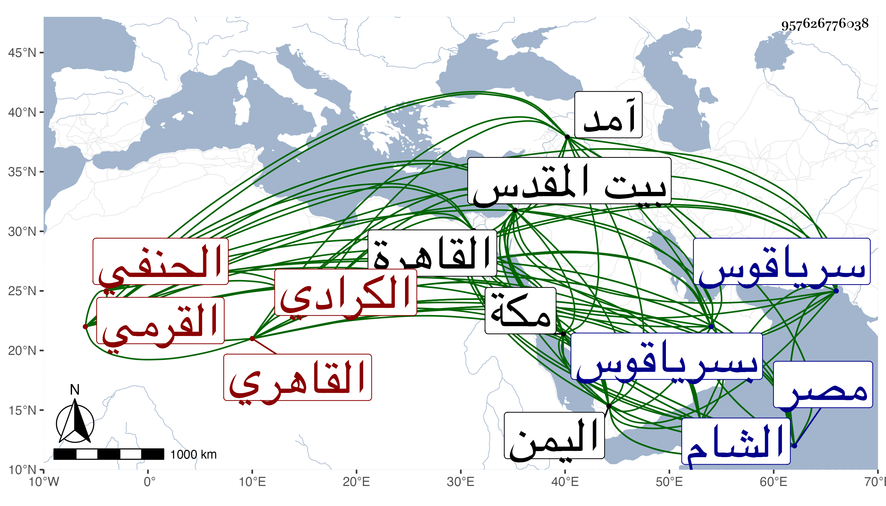

0902Sakhawi.DawLamic.ITO20230111-ara1.EIS1600.957626776038
Biography ID: 957626776038
335
محمد بن عثمان بن سليمان بن رسول بن أمير يوسف بن خليل بن نوح المحب بن الشرف الكرادي الأصل نسبة لكراد بفتح الراء الخفيفة قبيلة من التركمان ووهم العيني فنسبه تركمانيا القرمي القاهري الحنفي والد أحمد وإبراهيم وأخو حسين الماضيين ويعرف بابن الأشقر لقب لوالده المترجم في المائة قبلها . ولد في سنة ثمانين وسبعمائة وقيل قبلها بالقاهرة بزاوية أرغون الأفرم بالصوة ، ويقال أن أمه كانت بكرية ونشأ بها في كنف أبويه وانتفع فيما قيل بالجمال إسحق الأشقر نزيل القدس ولزمه سنين في عدة علوم وذكر أنه كان يخدمه ويحمل ولده وانتمى ليشبك الناصري الكبير لوصيته به من أبيه فحفظ القرآن وغيره واشتغل يسيرا وسمع على الزين العراقي كما سمعته من شيخنا كثيرا كالصحيحين وكان هو يحكى فيما بلغني أن سماعه لهما كان بمجلس يشبك المذكور وأن الشيخ لم يكن يجلس إلا على طهارة فكان إذا حدث قطع القارئ القراءة حتى يتوضأ ولا يسمح بالمشي على بساط الأمير بدون حائل لكن قرأت بخطه على بعض الاستدعاآت سمعت البخاري على الزين العراقي بقراءة الشهاب الأشموني في سنة ثلاث وثمانمائة فالله أعلم ، وأجاز له بأخرة ابن الجزري في استدعاء لابن شيخنا مؤرخ بسنة ثلاث وعشرين وخلق كثيرون في استدعاء النجم بن فهد ولا أشك أن له أشياء عمن فوق هذه الطبقة لكن ما وقفت على ذلك ، وكان شيخنا رام مني التخريج له فما تيسر في حياته وأول ما تأهل استقر به يشبك المذكور عنده فيما قيل إماما ورفع من جانبه بحيث لم يكن يرد له كلاما ولذا قصد في القضاء فاشتهر ذكره ثم جهزه لمكة واليمن عقب موت الخواجا البرهان المحلي عن الناصر فرج في سنة ست وثمانمائة فضبط موجوده وأحضر بولده معه فأقبلت عليه السعادة وتزوج أخته فتزايدت وجاهته ، وناب في القضاء عن ابن العديم فمن بعده واستقر في مشيخة الخانقاه الناصرية بسرياقوس في ربيع الأول سنة خمس عشرة برغبة شمس الدين محمد بن أوحد حين مرافعة صوفيتها فيه لمعرفته كما قال شيخنا بمحبة الناصر للمنزول له لحسن سياسته فأمضى له يلبغا الناصري نائب غيبة الناصر النزول فرسخت قدمه في سرياقوس وباشرها برياسة وحشمة وتودد وعقل ، وبرز بعد استقراره بيسير من السنة للقاء المستعين بالله لكونه زوجا لأخت زوجته المشار إليها فتلقي بالإكرام والتعظيم فتزايدت وجاهته وعلت مكانته ، وأضيف إليه في الأيام الناصرية نظر جامع عمرو واستمر معه إلى أن سافر للحج فأخرج عنه حين أنهى إلى السلطان أنه أخذ مال الجامع فحج به فلما جاء بادر للاجتماع بالمستقر عوضه والتمس منه إرسال قاصد معه إلى خلوته بالشيخونية ليتسلم مال الجامع ففعل وظهرت براءته مما نسب إليه عند السلطان فمن دونه ، ثم استقر في الأيام المؤيدية في نظر دار الضرب بدون خلعة فدام نحو سنة وابتهج السلطان بما ضرب في أيامه وحج في أيامه أيضا وزار بيت المقدس ودخل الشام ، واتفق أن المؤيد وهو نظام قال له : ما فعل صهرك يعني الخليفة ثم كرر ذلك مرة بعد أخرى فقال له : أخت زوجته طالق ثلاثا فعد ذلك من وفور عقله ليزيل تخيله . وصاهر شيخنا على ابنتيه واحدة بعد أخرى وحج بالأولى منهما وبرز مع والدها بعد انفصال الركب بعشرة أيام فأدركا الركب بالقرب من الحوراء . ولم يزل يترقى حتى استقر في كتابة السر بالديار المصرية في رجب سنة تسع وثلاثين بعد صرف ابن البارزي ورغب حينئذ لأكبر أولاده أحمد عن مشيخة الخانقاة السرياقوسية ثم استعفى عن كتابة السر في التي تليها وأعطاه السلطان نظر الخانقاه مع نظر جامعه هناك ولبس لهما كاملية ، ثم في ربيع الثاني سنة اثنتين وأربعين استقر في نظر البيمارستان بعد وفاة النور بن مفلح وكان ينوب عن المحب فيه أخوه البدر حسين ، ثم في أول أيام الظاهر جقمق استقر في نظر الجيش عوضا عن الزيني عبد الباسط ثم انفصل عنه وهو غائب في الحج في سلخ ذي القعدة سنة ست وأربعين ثم أعيد إليه في شوال التي بعدها ثم صرف عن البيمارستان في ربيع الآخر سنة خمسين ثم عن الخانقاه نظرا ومشيخة ثم عن نظر الجيش ، وأعيد لكتابة السر مرة بعد أخرى وكذا إلى الخانقاه نظرا ومشيخة وآل أمره إلى أن لزم بيته على نظر الخانقاه فقط حتى مات في يوم الثلاثاء ثاني عشر رجب سنة ثلاث وستين ودفن بتربة تجاه الناصرية فرج برقوق بعد أن أثكل ابنا له كان أعز عنده من سائر أولاده عوضهما الله الجنة ورحمه وإيانا . وكان رئيسا دينا معظما في الدول مع السكون والعقل والحشمة والوقار والاحتمال والمداراة ، موصوفا بالإمساك مع الثروة وبقلة البضاعة في العلم مع اشتغاله حتى بعد رياسته على الأئمة ممن كان يستدعي بهم عنده كالبساطي قبل دخوله في القضاء والشرواني بل أسكنه عنده بقراءته وقراءة غيره في الفقه وأصوله والعربية والعقائد وغير ذلك . أثنى عليه شيخنا في ترجمة أبيه من درره بقوله : كان حسن المعرفة بالأمور خبيرا بعشرة أهل الدولة وغيرهم قوى الرأي مسعود الحركات بل استخلفه في قضاء الديار المصرية سنة آمد فنظر في الأمور بسياسة وحسن تدبير وكذا أسند إليه المشارفة فيما أوصى بتفرقته من الثلث بعد موته ووصفه بأخي في الله تعالى القاضي محب الدين ناظر الجيوش المنصورة رزقه الله العفو والعافية في الدنيا والآخرة ، والثناء عليه مستفيض . وفي ترجمته من تصنيفي ذيل القضاة والمعجم والفوائد زوائد وقد اجتمعت به غير مرة وسمعت عليه ختم البخاري وكذا سمع عليه غير واحد وأكرم في موطنين شريفين القارئ بما لم يتفق لغيره ممن حضرهما مع كونه أكرم وأسمح وحمد له هذا وذكر في سعة عقله وتأمله ، وقرأ عليه البقاعي الصحيح أو غالبه بمنزله قصدا لنائله وبره وصار يروم منه المشي في خصوماته ويلح على عادته بحيث أنه تكلم معه في بعضها وهما في جنازة فما احتمل المحب هذا وقال له يا أخي وكم أما تفتر وترجع إن هذا لعجيب .
